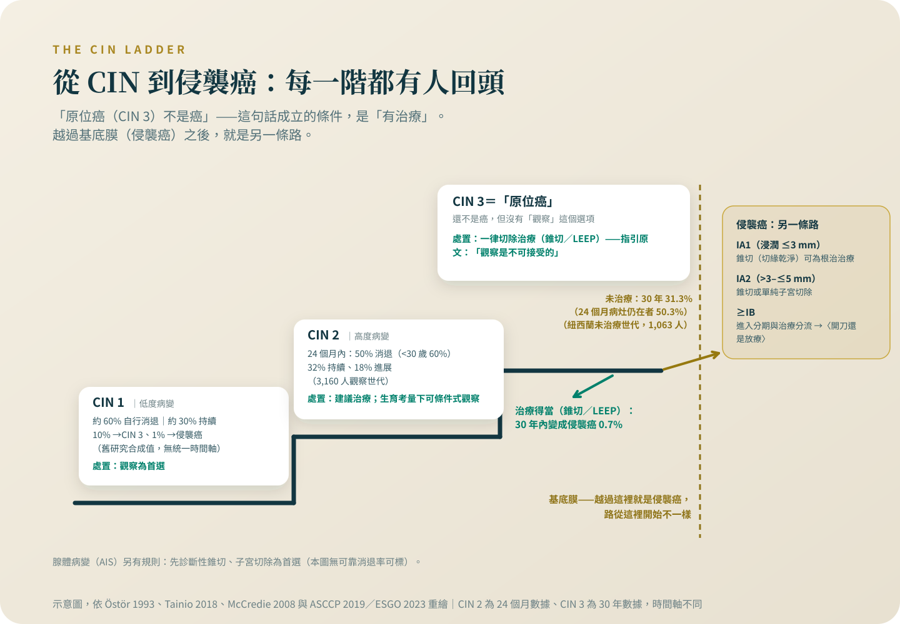

抹片異常、原位癌、侵襲癌，差在哪
把細胞學、CIN 分級、原位癌與侵襲癌排回同一條路上：哪一級可以等、哪一級沒得等、錐切什麼時候就是治療本身。
同一個診斷，有治療和沒治療，三十年後是 0.7% 對 31.3% 的差距——「原位癌不可怕」是一句只對了一半的話。這一篇把成立的那一半條件寫清楚，也把報告上每個名詞對應的動作排出來。
先說我的位置：根治性化放療與近接治療是我自己每天在做的治療。所以這個專題裡關於放療的每一句話，我寫得比別人更保守，不是更熱。
抹片報告寫著 HSIL 或「原位癌」，很多人當天晚上就開始搜尋存活率。先停一下。「抹片異常」「癌前病變」「原位癌」「侵襲癌」不是同一件事的不同講法，是一條路上距離差很遠的幾個點。先把它們排回正確的位置，再把每一個點該做什麼講清楚——多數拿著異常報告的人，站的位置離「癌」還有一段來得及處理的距離。
抹片異常不是診斷，是「要再看清楚」的信號
抹片是篩檢，不是判決。報告上的細胞學分類，下一步是陰道鏡與切片，最後說話的是病理。病理的名詞在 2012 年由美國病理學會與美國陰道鏡暨子宮頸病理學會的 LAST 計畫統一成兩級：低度（LSIL）與高度（HSIL）鱗狀上皮內病變，高度之下再註記 CIN 2 或 CIN 3[1]。所以同一份報告可能同時出現「HSIL」和「CIN 3」兩種寫法——它們指的是同一格，不是病變又升級了。
「原位癌不可怕」，成立的條件是「有治療」
原位癌是 CIN 3 的舊稱：病變還停在上皮層內、沒有突破基底膜，所以「還不是癌」這句話在病理上是對的[2]。但這句話的另一半，寫在紐西蘭的一段黑歷史裡。1955 到 1976 年，紐西蘭國家婦女醫院有一群 CIN 3 病人在未經同意的情況下被留置觀察、幾乎不治療，事後經司法調查重建了完整追蹤：只做小切片、病灶幾乎未處理的那群人，三十年累積 31.3% 變成侵襲癌，其中 24 個月時病灶仍持續存在的人是 50.3%，而初始治療適當的人，三十年只有 0.7%[2]。同一個診斷，差別只在有沒有治療，結局是 0.7% 對 31.3%。「原位癌不可怕」是真的，但它成立的條件是右邊那個動作有做。這也是為什麼美國陰道鏡暨子宮頸病理學會 2019 年指引把 CIN 3 寫得沒有轉圜：建議治療，「觀察是不可接受的」，除了懷孕沒有第二個選項[3]。

CIN 1 等它自己退，CIN 2 看條件，CIN 3 沒得等
彙整 1950 年代以來自然史研究的經典回顧估計，CIN 1 約六成自行消退、進展到侵襲癌的約 1%——作者自己也說，這些是研究的合成值，形態學無法預測個別病人[4]。所以 2019 年指引對 CIN 1 寫的是觀察優於治療，持續兩年以上才把治療列為可接受[3]。CIN 2 站在中間：36 個研究、3,160 名選擇觀察者的統合分析顯示，24 個月內約一半自行消退，30 歲以下約六成[5]；指引寫的是建議治療，但生育的顧慮大於癌症的顧慮、且轉化區看得到、頸管取樣乾淨時，可以跟醫師談每 6 個月一次、上限兩年的觀察[3]。CIN 3 如上一節——治療，沒有觀察這個選項。腺體病變的原位腺癌（AIS）規則另計：先做診斷性錐切排除侵襲性腺癌、標本要完整取下，錐切證實且切緣陰性後，不需保留生育者以單純子宮切除為首選[3]。
錐切不是檢查的前奏，它常常就是治療本身
LEEP 或錐狀切除做的事，是把含病變的那一小塊組織完整拿掉。對 CIN 2 與 CIN 3，指引明定切除優於燒灼破壞[3]；再往上一格，對浸潤深度不超過 3 毫米的 IA1 期侵襲癌，歐洲婦癌學會 2023 年指引寫得更直接：切緣陰性的錐切可以視為根治性的治療，因為「子宮切除不會改善結果」，更大的手術反而是過度治療；IA2 期（3 到 5 毫米）在切緣陰性下，錐切或單純子宮切除就足夠[6]。台灣健保的給付項目裡有「子宮頸楔狀切除術」這個項目[7]；LEEP 是否有自費差額，我查不到全國一致的答案——各院不同，向醫務課或個管師確認。
「切緣不乾淨」聽起來像失敗，下一步卻不是大手術
97 個研究、44,446 名接受切除治療者的統合分析：切緣有病變的比例約 23%，治療後殘存或復發高度病變的比例整體是 6.6%；切緣陽性的人風險是陰性的 4.8 倍——倍數比的是兩群人的發生比例，不是在預言你這一個人[8]。數字嚇人，我在門診會先請病人看下一句：同一份分析發現，更會抓漏的哨兵是治療後的 HPV 檢測：它抓出殘存病變的敏感度是 91%，切緣狀態只有 55.8%；治療後 HPV 陰性的人，殘存風險只剩 0.8%[8]。歐洲指引的處理方式：切緣仍有高度病變，通常是再做一次錐切以排除更深處的侵襲，不是直接拿掉子宮[6]。
錐切標本裡驗出侵襲癌，路就換了
IA 期的定義是只有顯微鏡才看得到的侵襲、深度不超過 5 毫米，而它的診斷本來就必須靠涵蓋整個病灶的錐切標本[9]。所以會有這種情況：以為在處理癌前病變，病理報告回來寫著侵襲癌。這不代表前面白做——那塊標本正是接下來分期的依據。深度超過 5 毫米或有肉眼可見病灶之後，問題就變成「期別怎麼定」與「開刀還是放療」，分別寫在〈分期靠內診和影像，不是開刀看〉與〈開刀還是放療：不開刀不是放棄〉，這裡不展開。
行政上有一個側面的佐證：台灣健保的重大傷病清單以侵襲癌的疾病碼定義，原位癌不在清單內[10]。制度把線畫在同一個地方——原位癌是還來得及用一個小手術解決的病變。但這句話不能倒過來讀成「不嚴重」：不處理它的下場，數字在前面那一節。
治療後的追蹤，用年算，不是用次算
治療過不等於從此下車。27 個登記串接研究的統合分析：CIN 治療後得子宮頸癌的風險是一般族群的 3.3 倍，而且升高持續至少 20 年[11]。指引因此把追蹤拉得很長：治療後 6 個月做 HPV 檢測（不論切緣狀態），之後每 3 年一次，至少持續 25 年[3]。台灣的健保給付也留了這個口子：曾有子宮頸癌前病變、或上一次抹片異常的人，6 個月內重做抹片是給付的適應症[7]。
拿著這份報告，下次門診可以直接問的四句話
「我的病理報告是哪一級——CIN 1、2、3，還是已經有侵襲？報告上如果同時有兩種寫法，指的是不是同一件事？」
「以我的年齡和生育計畫，這一級的選項是觀察還是切除？如果觀察，多久回來一次、上限是多久？」
「如果做錐切，切緣乾淨和不乾淨，接下來各是什麼安排？」
「治療後 6 個月那一次的 HPV 檢測，有沒有幫我排進去？之後的追蹤排到哪一年？」
把答案抄在報告的空白處帶回家。這一篇能給你的是地圖；你自己那一格的路，要用這四句話跟醫師對出來。
每一級的處置都有年齡與生育計畫的但書，同一份報告在兩個人身上可以是不同的答案。回診前把病理報告找出來，把「哪一級、切緣乾不乾淨、下一步是觀察還是切除」逐題問清楚；切緣狀態與治療後 6 個月的 HPV 檢測，是最容易漏掉的兩格。
參考資料
Darragh, T. M., Colgan, T. J., Cox, J. T., et al. (2012). The Lower Anogenital Squamous Terminology Standardization Project for HPV-Associated Lesions: background and consensus recommendations from the College of American Pathologists and the American Society for Colposcopy and Cervical Pathology. Journal of Lower Genital Tract Disease, 16(3), 205–242. DOI: 10.1097/lgt.0b013e31825c31dd
McCredie, M. R., Sharples, K. J., Paul, C., et al. (2008). Natural history of cervical neoplasia and risk of invasive cancer in women with cervical intraepithelial neoplasia 3: a retrospective cohort study. The Lancet Oncology, 9(5), 425–434. DOI: 10.1016/s1470-2045(08)70103-7
Perkins, R. B., Guido, R. S., Castle, P. E., et al. (2020). 2019 ASCCP Risk-Based Management Consensus Guidelines for Abnormal Cervical Cancer Screening Tests and Cancer Precursors. Journal of Lower Genital Tract Disease, 24(2), 102–131. DOI: 10.1097/lgt.0000000000000525
Ostör, A. G. (1993). Natural history of cervical intraepithelial neoplasia: a critical review. International Journal of Gynecological Pathology, 12(2), 186–192. PMID: 8463044
Tainio, K., Athanasiou, A., Tikkinen, K. A. O., et al. (2018). Clinical course of untreated cervical intraepithelial neoplasia grade 2 under active surveillance: systematic review and meta-analysis. BMJ, 360, k499. DOI: 10.1136/bmj.k499
Cibula, D., Raspollini, M. R., Planchamp, F., et al. (2023). ESGO/ESTRO/ESP Guidelines for the management of patients with cervical cancer — Update 2023. International Journal of Gynecological Cancer, 33(5), 649–666. DOI: 10.1136/ijgc-2023-004429
衛生福利部中央健康保險署。全民健康保險醫療服務給付項目及支付標準之項目檔（114.01.01 生效版）。
Arbyn, M., Redman, C. W. E., Verdoodt, F., et al. (2017). Incomplete excision of cervical precancer as a predictor of treatment failure: a systematic review and meta-analysis. The Lancet Oncology, 18(12), 1665–1679. DOI: 10.1016/s1470-2045(17)30700-3
Bhatla, N., Aoki, D., Sharma, D. N., Sankaranarayanan, R. (2021). Cancer of the cervix uteri: 2021 update. International Journal of Gynaecology and Obstetrics, 155(Suppl 1), 28–44. DOI: 10.1002/ijgo.13865
衛生福利部中央健康保險署。全民健康保險保險對象免自行負擔費用辦法第二條附表一：全民健康保險重大傷病項目及其證明有效期限（114年1月1日以後適用）。
Kalliala, I., Athanasiou, A., Veroniki, A. A., et al. (2020). Incidence and mortality from cervical cancer and other malignancies after treatment of cervical intraepithelial neoplasia: a systematic review and meta-analysis of the literature. Annals of Oncology, 31(2), 213–227. DOI: 10.1016/j.annonc.2019.11.004
本文為一般性衛教說明，整理自公開發表的研究與官方公告，不能取代面對面的診療。研究結果適用的族群通常有嚴格條件，是否適用於你的情況，請與你的主治醫師討論。請勿依據本文自行調整、中斷或更換治療。
← 回到子宮頸癌專題